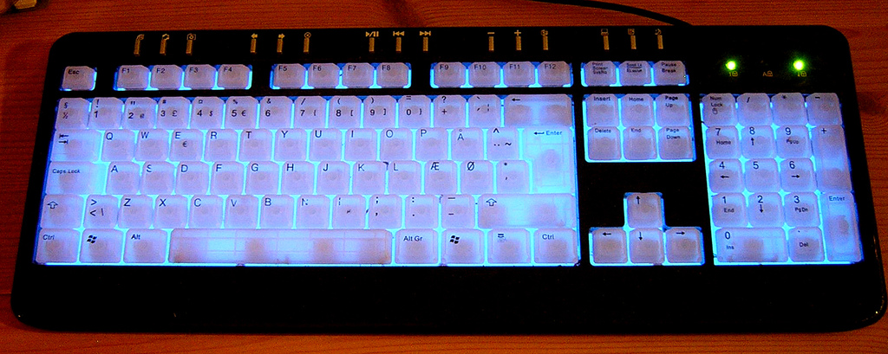

I've been learning Danish since about 3 months and I'd like to share my thoughts on the Danish language.
Let me get this out first: I don't know any language where the pronouncation is so far off from the written language than Danish.
Seriously, the first time I did a reading lesson with audio, I was stunned. Of course pronouncation is always relative but the thing is that Danish is also sort of inconsistent. Let's take the 'd'. In ever language I know of, it's pronounced like a soft 't'. No so in Danish. Personally I find it's best described by pronouncing it as 'dl' without pronouncing the 'd' and 'l' separately. But, this is only if the 'd' is soft, as in the word 'aftensmalden'.
Some of the best/worst words (go to Google Translate and click the 'listen' button):
Knowing Dutch, English and German, learning Danish vocabulary is mostly just having to learn a slightly different spelling than the familiar words in other languages.
Danish is very similar to Swedish and Norwegian, especially the written forms. With some knowledge of Danish vocabulary, you can read Swedish and Norwegian good enough to get a gist of what it's about. Fluent Danish speakers can often even understand Swedes without much trouble.
I used Memrise and Pimsleur Danish audio lessons. After following those I was able to read most Danish news articles while looking up translations of some words, and have a (written) conversation about basic stuff.
To type the Danish letters 'ø', 'å' and 'æ' on a Windows computer, add the Danish keyboard and switch between your regular keyboard and the Danish keyboard with ALT+SHIFT. The Danish letters will be next to your 'P' and 'L' as shown here:
Danish keyboard. Ma1974, Flickr, CC.